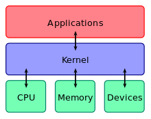

Tal vez la mayoria estamos acostumbrados a usar Windows y asi ha sido durante toda nuestra vida hasta este momento, cuando decidimos experimentar con otros sistemas operativos como lo son las distribuciones basadas en Linux, y en esta ocasion decidimos probar con el tan mencionado Ubuntu, siendo esta una de las distribuciones más famosas de Linux, debido a su facilidad y buena estetica que brinda a sus usuarios.
Linux es un sistema operativo: un conjunto de programas que le permiten interactuar con su ordenador y ejecutar otros programas.
Un sistema operativo consiste en varios programas fundamentales que necesita el ordenador para poder comunicar y recibir instrucciones de los usuarios; tales como leer y escribir datos en el disco duro, cintas, e impresoras; controlar el uso de la memoria; y ejecutar otros programas. La parte más importante de un sistema operativo es el núcleo. En un sistema GNU/Linux, Linux es el núcleo. El resto del sistema consiste en otros programas, muchos de los cuales fueron escritos por o para el proyecto GNU. Dado que el núcleo de Linux en sí mismo no forma un sistema operativo funcional, preferimos utilizar el término “GNU/Linux” para referirnos a los sistemas que la mayor parte de las personas llaman de manera informal “Linux”.
Linux está modelado como un sistema operativo tipo Unix. Desde sus comienzos, Linux se diseñó para que fuera un sistema multi tarea y multi usuario. Estos hechos son suficientes para diferenciar a Linux de otros sistemas operativos más conocidos. Sin embargo, Linux es más diferente de lo que pueda imaginar. Nadie es dueño de Linux, a diferencia de otros sistemas operativos. Gran parte de su desarrollo lo realizan voluntarios de forma altruista.
 El pinguino "Tux" es la mascota de Linux
El pinguino "Tux" es la mascota de Linux
El kernel Linux es el componente central de un sistema operativo GNU/Linux como Ubuntu.
Un kernel se encarga de manejar los recursos hardware como la CPU, la memoria y los discos duros, y proporciona abstracciones que le dan a las aplicaciones una visión consistente de esos recursos. El kernel también proporciona controladores para los dispositivos conectados a distintos buses (un bus es un lugar por donde se mueven datos en un computador) del sistema como USB, PCI, SATA e IDE.

Al igual que muchisimas más Ubuntu es una distribucion de linux, destacamos esta por ser una de las más populares actualmente, debido a su diseño y simplicidad en la que los desarrolladores han puesto bastante trabajo, es conocida como la distro más facil de usar o con la que muchos entusiastas inician en el mundo de Gnu/Linux.
Ubuntu es un sistema operativo libre, está diseñado para funcionar bien en los últimos ordenadores portátiles, ordenadores de sobremesa y dispositivos de pantalla táctil, se ve increíble en pantallas de alta resolución. Utiliza el núcleo Linux, y su origen está basado en Debian.
Ubuntu es para todos, independientemente de su nacionalidad, género o discapacidad. Ubuntu está totalmente traducido a más de 50 idiomas e incluye las ayudas técnicas esenciales. Es uno de los sistemas operativos más seguros, no podría existir sin la comunidad mundial de desarrolladores voluntarios.